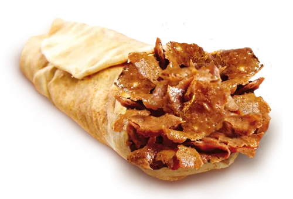

Home
Durum Kebab

Description
A Durum Kebab, also known as a Doner Kebab, is a popular Turkish dish that can be made at home using various meats like beef, lamb, or chicken. Here is a recipe for a beef and lamb Doner Kebab that can be cooked in a skillet.
Ingredients
- 1 large onion: quartered (500g / 17.6 oz)
- 1/2 kg regular ground beef or a mix of lamb and beef: (500g / 1.1 lb)
- 2 tablespoons whole yogurt: (140g / 4.9 oz)
- 2 tablespoons whole milk: (120ml / 4 oz)
- 1 tablespoon fresh thyme: (leaves picked)
- 1 1/2 teaspoons salt: (7.5g / 0.26 oz)
- 1/4 teaspoon black pepper: (1.25g / 0.04 oz)
- 1-2 tablespoons olive oil or butter: (15ml - 30ml / 0.5 - 1 oz)
Steps
- In a food processor, pulse the chopped onion until finely minced. Add the ground meat, fresh thyme, salt, pepper, yogurt, and milk, blending until evenly mixed and smooth for at least 1-2 minutes.
- Lay out a large piece of plastic wrap or wax paper and scoop the meat onto it. Shape the meat into a 20 cm large log using the plastic wrap, twisting the ends to seal and compact it into a sausage-like form. Freeze until solid for at least 4 hours.
- Once the kebab meat is solid, unwrap a portion and place it horizontally on a kitchen towel to avoid slipping. Slice it thinly along the circular side, about 5 mm thick. If you find it easier to stand it up, you can also slice along the longer side.
- Heat a large heavy-bottomed cast iron skillet over medium-high heat with a light spray of oil. Cook the meat strips until golden brown on each side, about 2 to 3 minutes, then transfer to a dish. Work fast in batches before the doner slices defrost completely. You also should not crowd the pan or they will steam.